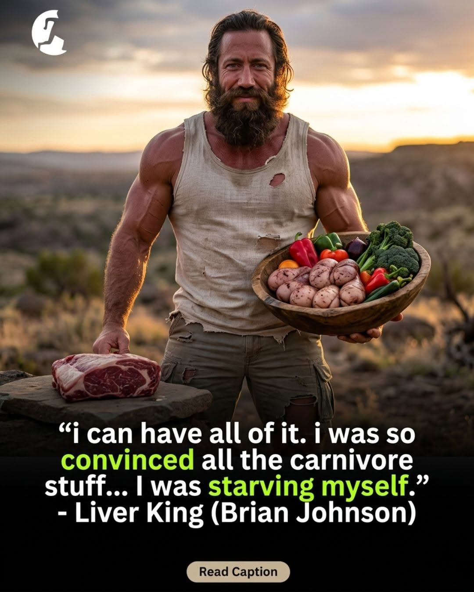

He’s eating fruits and vegetables now. Admits eating “only meat” was hurting him. This guy scammed millions of people.
🍖 It seems even the "Kings" have to pivot sometimes.
For years, Liver King was synonymous with one thing: a strict, all-meat carnivore diet.
He pushed the ancestral lifestyle to the absolute limit, convincing millions that this was the only path to optimal health.
But in a stunning turn of events, Brian Johnson is singing a different tune.
He recently admitted that his strict adherence to carnivore was actually hurting him.
Despite consuming massive amounts of meat, his body was in a state of starvation.
It takes a lot of courage to stand up and admit when your formula for success isn't working.
It turns out that even with the most extreme focus, rigid dietary rules can backfire.
Liver King is now embracing a more balanced approach.
He’s reintroduced vegetables back into his diet and is feeling the positive effects.
He realized that he didn't have to choose between protein and essential nutrients.
It's a powerful lesson for everyone in the wellness community.
A rigid plan isn't always the best plan for long-term health and vitality.
Listening to your body’s unique signals is far more important than any diet label.
Here are a few takeaways from his recent change of heart:
1️⃣ Rigid dieting is rarely sustainable and can lead to unexpected health challenges.
2️⃣ Your intuition is often your best guide—if your body is telling you something is off, listen!
3️⃣ Don’t be afraid to experiment and adjust your approach until you find what makes you thrive.
Let's focus on nourishment, not restriction. 🎉
We are all unique, and our health journeys should reflect that. 💪
